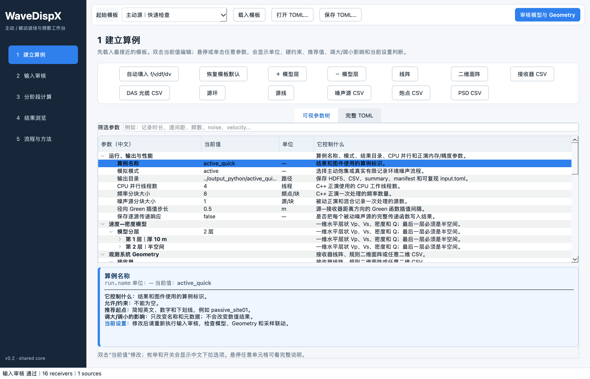
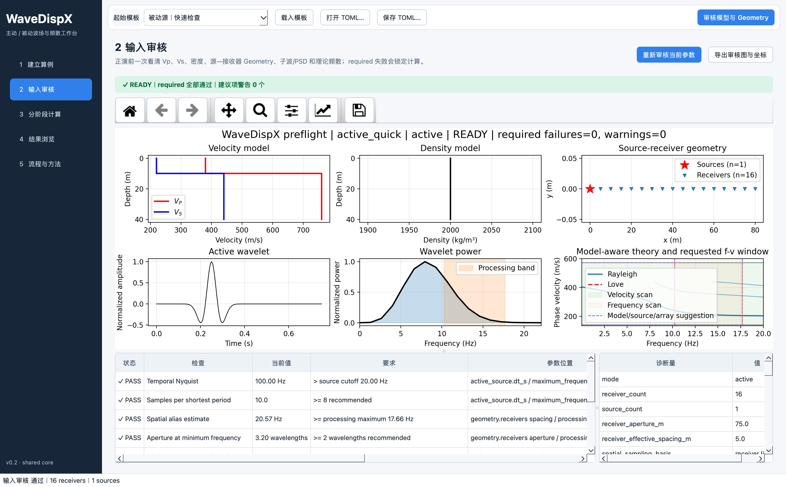
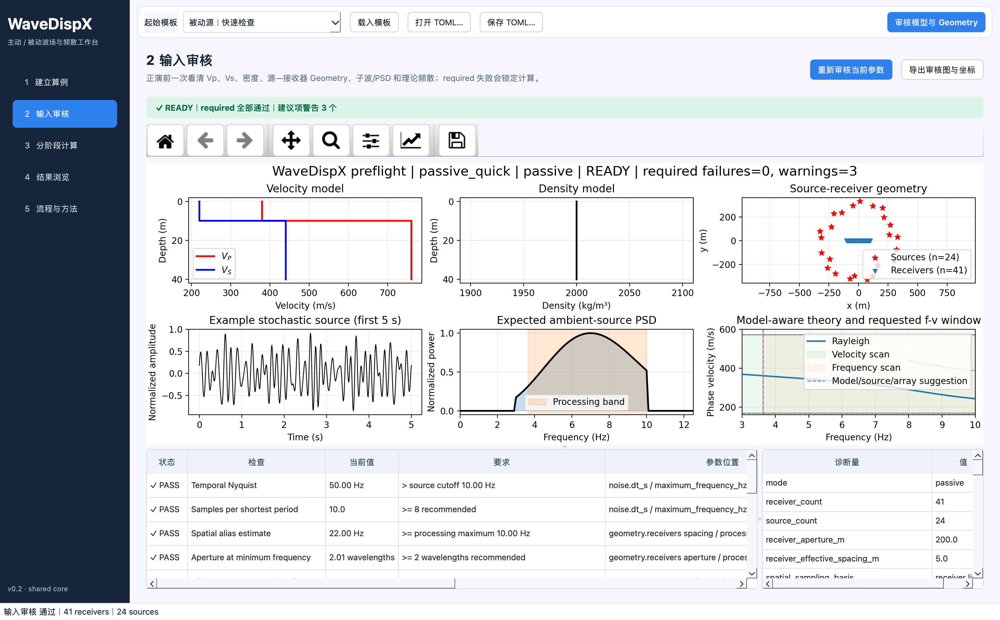
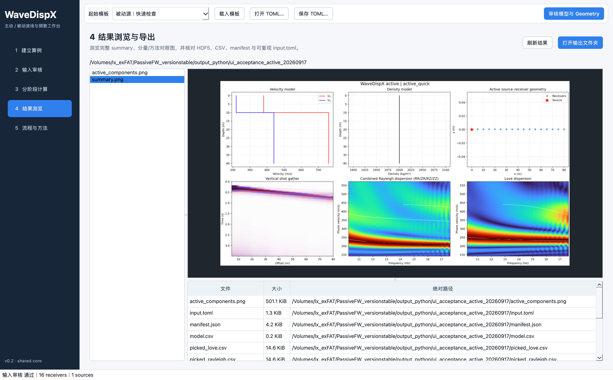
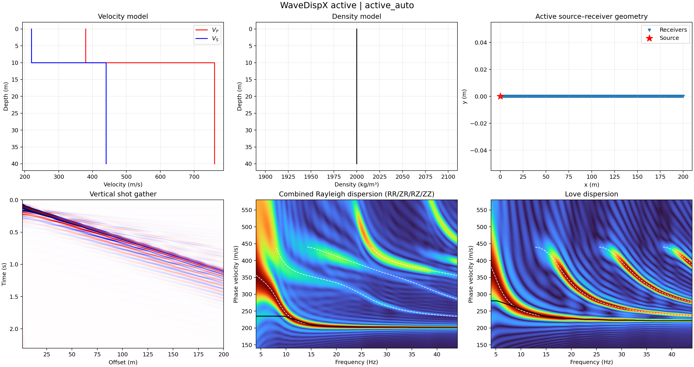
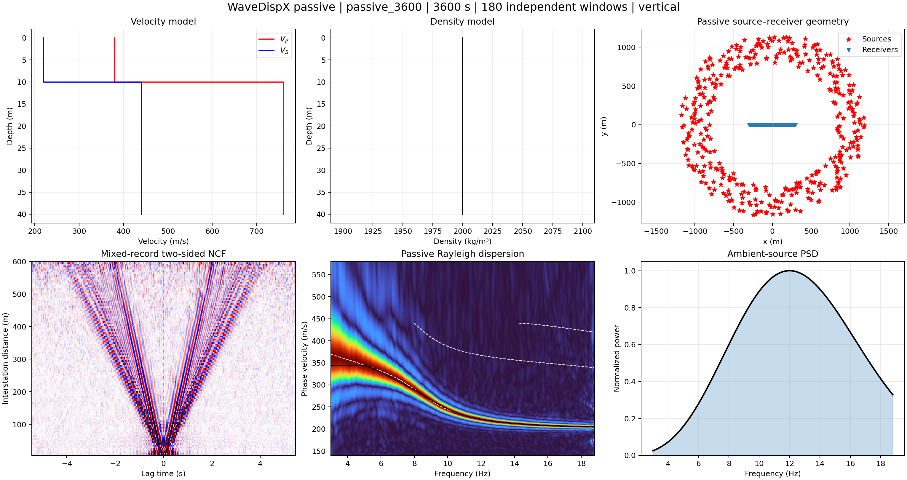
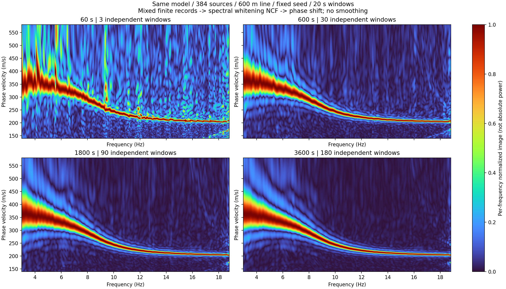
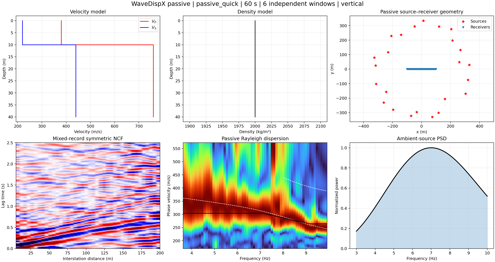
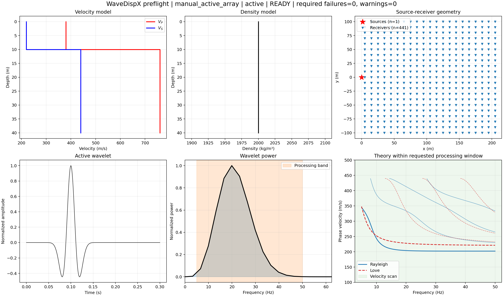
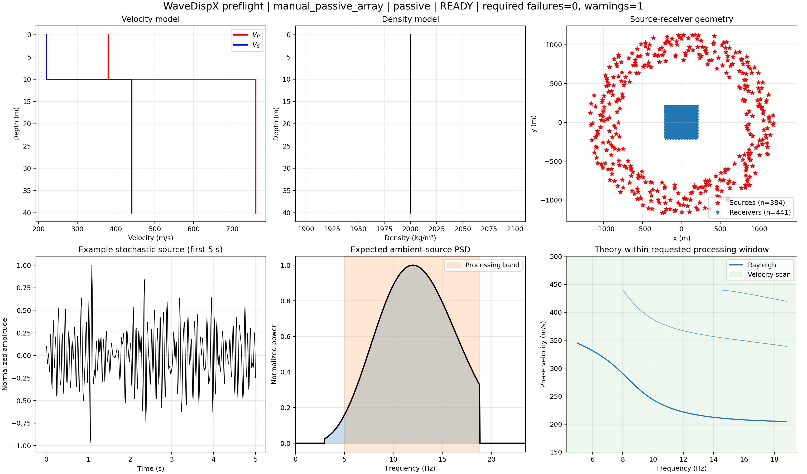

本页是当前操作入口。截图均保留完整窗口或完整图幅，点击可查看原尺寸。图像采用仓库相对路径，可随仓库复制。参数的完整字段字典见 输入参数说明；算法移交见 正演接口手册。
1. 从哪里开始
进入项目根目录后启动。以下命令强制使用当前目录源码，避免本机另一个 editable 安装指向其他工作区。
PYTHONPATH=python_src conda run -n seisloc python -m wavedispx.desktop # 网页入口 PYTHONPATH=python_src conda run -n seisloc wavedispx-ui # 命令行全流程 PYTHONPATH=python_src conda run -n seisloc wavedispx run examples/active_quick.toml
在其他机器上，先按 README 安装项目及所需可选依赖；桌面需要 PySide6，网页需要 Streamlit，Notebook 需要 Jupyter 相关依赖。不要把包安装到 base。启动不需要打包成 .app。
第一次使用：选择“主动源｜快速检查”或“被动源｜快速检查”，载入模板；先确认模型与坐标，再点击自动填参、输入审核，最后运行全部。快速模板用于检查流程，不代表噪声已经收敛。
Notebook：主动、被动、公式与原理、DAS。集中编辑 PARAMETERS Cell，逐 Cell 执行；也可指定 INPUT_TOML，并在最后 Cell 设置 RUN_ALL_NOW。
2. 参数在哪里改

- 双击参数树的“当前值”；枚举用下拉框，数值可直接输入。
- 悬停参数查看说明；单击后，底部帮助卡持续显示单位、约束、推荐起点和调整影响。
- 可用搜索框查找“频率”“记录时长”“lag”“标距”或字段英文。
- 编辑完整 TOML 后，点击“TOML → 应用到参数树”；直接改文本尚未提交时不会改变运行配置。
- 修改参数后重新审核；通过 required 检查后再运行。
| 参数组 | 需要确认 |
|---|---|
| model.layers | 每层厚度 m、Vp/Vs m/s、密度 kg/m³、Qp/Qs；最后一层 thickness_m=inf；Vp>Vs>0。 |
| geometry.receivers | line / grid / file；与震源使用同一坐标系和米制单位。 |
| active_source | 炮点、载荷分量、子波、主频、最高频率、dt、记录时长。 |
| ambient_sources + noise | 源位置与数量、空间种子、时间模型、PSD、时间种子、总时长、独立窗长、最大 lag。 |
| processing | 成像方法、f/v 范围、df/dv、归一化、距离 taper、理论模态及拾取参数。 |
| run | 独立输出目录、CPU workers、分块大小、径向插值精度。 |
3. 自动建议是可编辑的起点
桌面按钮“自动填入 f/v/df/dv”（网页“计算并套用自动推荐”）按当前模型、源谱、阵列孔径/采样和 DAS 标距计算建议，并把数值填入普通输入框。可继续修改任何字段；运行不会再次用建议值覆盖你的手动输入。
“恢复模板默认”只恢复所选模板的频散范围/步长与主动记录时长或被动总时长/窗长/lag。它不重新计算当前模型的建议；模型或 Geometry 已改变时，请使用“自动填入”。“载入模板”则完整替换算例输入。两种重置用途不同。
2026-09-17 修订：推荐展示源功率不低于峰值 −20 dB 且有空间采样支持的连续频带，不再用“所有模态满足两波长孔径”裁窄频带。短孔径、DAS 标距零点仍会影响结果，审核保留警告。速度边界采用理论模态范围加余量；dv 按慢分支的孔径峰宽/8 与速度跨度/300 的较小值向下取工程步长，仍需 dv/2 检查弱峰。理论估计不是能量的严格边界。
被动自动按钮现在同时增加总时长到至少60独立窗、至少600 s，并按窗长整数倍取整；保留更长的原时长。此值只是不从6窗起步的工程候选，必须固定源场、种子、窗长比较 T 与 2T；不保证收敛。不会偷偷增加源数、换源位置或加长阵列。activity_file 指定活动时序时不自动扩展总时长，需自行同步时序文件。
| 字段 | 含义 / 允许值 | 调整后影响 |
|---|---|---|
| frequency_min_hz / frequency_max_hz | 能量图频带，须有源谱和采样支持；实际使用正频率。 | 改变频带还可能改变自动设计的正演时长，需要重算受影响上游。 |
| frequency_step_hz（df） | 0 或省略：由记录长度与 FFT 补零给出；正数：显式输出频率步长。 | 补零 FFT 复谱在指定轴上插值。更密网格不增加物理分辨率。 |
| velocity_min_mps / velocity_max_mps | 相速度扫描范围 m/s，应覆盖目标模态及周围能量。 | 过窄会裁掉高速分支；理论线不是能量图生成依据。 |
| velocity_step_mps（dv） | 正数，m/s；越小网格越细。 | 增加成像成本；不突破阵列孔径决定的速度分辨能力。 |
| active_source.record_duration_s | 0 或省略为自动，正数为指定实际保存记录周期。 | 改变主动正演与成像。若 dt=0.005 s、周期=3.5 s，最后样点为3.495 s。 |
| noise.maximum_lag_s | 0 或省略为自动；显式值必须小于 window_s。 | 改变实际保留的 NCF lag 范围及后续成像，不能当成纯绘图裁剪。 |
显示 df、独立噪声窗的 1/window_s、裁剪 NCF lag 的频谱宽化，以及 DWM 内部周期的频点间隔是不同量。延长噪声总时长主要降低统计波动；减小显示 df 不能替代延长有效记录。自动建议属于模型感知估计，不是所有模型的已验证最优值。
Notebook 中可显式调用 apply_automatic_parameters(mapping, base_directory=...)，返回新的参数字典和诊断；原字典不被修改。
4. 线阵、面阵和文件输入
| 布局 | 输入 | 处理方式 |
|---|---|---|
| line | start_x_m、stop_x_m、spacing_m、y_m；跨度须为道距整数倍。 | 主动按真实炮检距；被动按台间距组织 NCF。 |
| grid（二维面阵） | x/y 起止位置和 spacing_x_m / spacing_y_m。 | 主动使用实际二维径向炮检距；被动需 distance_bin_m，按台站对距离分箱。不是二维非均匀介质求解。 |
| file | UTF-8 CSV，x_m,y_m；位置有限且不能重复。 | 不规则二维坐标；被动仍需正的 distance_bin_m。 |
接收器示例（每行一个接收点）：
x_m,y_m 5,0 10,0 15,0 20,0
炮点示例（当前单算例只明确选择一炮）：
shot_id,x_m,y_m S001,0,0 S002,-20,0
可直接使用仓库 receiver 文件、shot 文件 和 完整主动配置。桌面 CSV 按钮读取本地文件；网页使用上传控件。TOML 内相对文件路径以该 TOML 所在目录解析。
源与接收器重合会报错。更长阵列改善低频孔径，更小道距改善高频采样；仅增大接收器数量不能保证所有频率都可分辨。
5. 被动噪声源怎么设置
空间分布在 ambient_sources：annulus 为环带，line/road 为线状源，file 读取 噪声源位置 CSV。count 是源数量；空间 seed 控制位置抽样，angular_sampling=stratified 使方位分层抽样。噪声源位置与接收器位置是两张不同的表。
| 参数 | 含义 |
|---|---|
| temporal_model=stationary_gaussian | 每个源、每个独立窗生成独立随机频谱，乘 PSD，经 Green 传播后在接收端混合；连续过程没有单次激发时刻表。 |
| temporal_model=poisson_ricker | 每源每窗事件数服从 Poisson(event_rate_hz × window_s)，窗内时刻均匀抽样；输出 noise_events.csv 记录实际激发时刻和权重。 |
| psd_shape | ricker、flat_band 或 file；外部文件列为 frequency_hz,power，频率递增、功率非负。 |
| noise.seed / independent_sources | 时间随机种子独立于空间种子；常规真实噪声流程 independent_sources=true。 |
| duration_s | 总统计记录长度；例如60 s / 10 s为6个独立窗。不是单次主动传播时长。 |
| window_s / overlap | 独立合成和互相关窗；须足够容纳传播和 lag。当前 overlap 必须为0。 |
| maximum_lag_s | 保存/展示的正 lag 上限；画出的对称 NCF 已折合因果和非因果支，不是单独的完整负 lag 图。 |
| ambient_sources.activity_file（高级） | CSV 列 window_index,source_index,amplitude_multiplier；索引从0开始。提供文件后，未列出的窗—源项为0，每窗至少一个活动源。 |
源数和源方位控制照明；总记录长度和独立窗数控制统计方差。不能仅凭旁瓣较多就判定源太少。应固定模型/Geometry/随机种子，分别测试源数、时长、孔径及成像核。示例 PSD：noise_psd.csv；Poisson 完整示例：passive_poisson.toml。
6. 先审核，再运行
点击“审核模型与 Geometry”（网页“校验并绘制输入”）。检查 Vp/Vs/ρ、源—接收器位置、子波/PSD、理论模态、源频带、空间/时间采样和记录时长。required 失败会阻止运行；recommended 警告需要按研究目标判断。


- 正演 / Green：主动生成炮集；被动建立噪声源到接收器的传递响应。
- 波形 / NCF：被动混合全部源的有限记录，随后只用接收器波形做互相关。
- 频散与拾取：选择 phase_shift、bessel 或 hankel，叠加独立理论曲线和自动拾取；compare_methods=true 可在同网格对照三者。
- 保存：写 HDF5、CSV、TOML、manifest 和结果图。也可一键执行全部。
只改显示df/dv或拾取通常可复用波形；改模型、源、Geometry、真实记录时长、输入文件内容或影响自动时长的频带/理论模态，会作废受影响上游。以界面的“失效阶段”提示为准。
当前 DWM 在复频率—波数域求解，再合成波形。主动频散来自有限炮集，被动频散来自有限噪声记录的 NCF；它们有真实记录窗限制。波形可含体波、面波、近场和尾波；本界面没有自动完成物理分离。
7. 看实际波形和完整结果

主要示例：宽频主动源与长记录被动源
波形坐标约定：主动shot gather横轴为offset，纵轴为时间，0在上、时间向下增加（这是时间轴，不是深度轴）。被动NCF横轴为−T到+T的lag，纵轴为台间距，近距在下、远距在上。双边图使用真实负/正分支，不镜像对称叠加结果；频散成像仍使用原有正lag对称叠加数据，不因换图轴而改变。红蓝颜色共用整图99%绝对振幅分位裁色，未逐道归一化。
本节更新后全量回归254项通过。它验证软件行为，不等于全部物理/统计收敛。
新会话默认使用“被动源｜长记录示例”（384源、1800 s），而不是24源60秒quick；已打开的旧会话需自行载入模板，避免覆盖未保存编辑。下面被动主图在同一配置基础上显式延长到3600 s。
| 本轮实际参数 | 主动 | 被动主图 |
|---|---|---|
| 处理频带 | 4.06263–44.106054 Hz | 3–18.8 Hz |
| 速度范围 / dv | 140–580 m/s / 0.5 m/s | 140–580 m/s / 0.2 m/s |
| 输出 df | 0.1 Hz | 0.01 Hz |
| 实际保存记录 / NCF lag | 2.301 s周期；末样点2.300 s；dt=0.001 s | 总长3600 s；窗长20 s；最大lag=5.455 s；dt=0.005 s |
| 不同时间尺度的频率间隔 | 1/2.301≈0.435 Hz | 单噪声窗1/20=0.05 Hz；保留正lag的FFT周期5.46 s，对应约0.183 Hz |
df小于1/T只让扫描更密，不增加有效信息；以上小数来自离散估计，不意味着边界已知到该精度。所有数值可改，模型或源谱变更后应重新审核。主动图低频自动拾取仍偏离理论，不能直接用黑线替代人工质检。
以下是实算结果，不是用理论曲线生成的理想图。模型仍为10 m覆盖层（Vp/Vs=380/220 m/s）和半空间（760/440 m/s），ρ=2000 kg/m³。两种采集的源谱、阵列和成像核不同，不能把图的差异当作主动/被动内核误差。白虚线为理论模态，黑线为自动拾取；色值为逐频归一化成像量，非绝对物理能流。全部图无后期平滑、无理论附近掩膜。



旧的60秒快速流程测试（仅用于了解失败/欠收敛外观）

全图相对差定义为 ‖ET−E3600‖₂/‖E3600‖₂，E为同一坐标上逐频归一化成像量。60/600/1800 s分别为69.01%/17.93%/7.07%；它不是波形误差、速度误差或跨求解器误差。1800→3600 s仍有变化，当前不宣布完全统计收敛。
| 目标 | 起始配置 | 需要检查 |
|---|---|---|
| 主动线阵 | active_quick.toml | 炮检距、波形完整性和体波/面波到时。 |
| 主动面阵 | manual_active_array.toml | 实际径向检距分布；阵列x/y间距不等同径向采样。 |
| 被动线阵 | passive_quick.toml | 方位照明、独立窗数、NCF lag和统计收敛。 |
| 被动面阵 | passive_grid_quick.toml | 每个距离箱的台站对数量、分箱宽度和有效孔径。 |
面阵布局参考


8. DAS：标距和道间距分别设置
开启 das.enabled。uniform 用统一 gauge_length_m 与 fiber_azimuth_deg；channel_file 从接收器CSV逐道读取两个端点，或逐道标距与方位。标距定义有限空间差分/平均，道间距定义采样，二者不能互换。measurement 选择 strain 或 strain_rate。
算子为 ε=(u₊−u₋)·t / Lg，应变率再对时间求导。实际计算标距两端位移；二维通道中心布局允许面阵，但不意味着模拟连续光纤力学。
输入示例：折线逐道光缆；模板 主动光缆、被动光缆、主动面阵、被动面阵。
当前DAS路径要求竖直源和phase_shift；DAS专用FJ/Hankel核、井中光缆、地形和连续弯曲光纤力学尚未验证。字段虽可编辑，不受支持的组合会明确报错。
9. 保存、重开与交接
| 文件 | 用途 |
|---|---|
| input.toml + 引用CSV | 可移交完整输入。移动目录时保留相对引用文件。 |
| resolved_config.json | 解析后的完整配置，含默认值。 |
| results.h5 | 实际时间/lag/f/v轴、波形、NCF、频散、理论及元数据。下游使用实际轴，不只用min/max重建。 |
| model.csv / receivers.csv / sources.csv | 本次实际模型、接收器与源坐标。 |
| summary.png、分量/方法图 | 人工QC；选择不同核不应仅凭图更“干净”。 |
| picked_*.csv | 自动拾取结果；可能跳模态或旁瓣，需要人工检查。 |
| manifest.json / convergence.csv | 输出索引、运行时间和被动时长对照。 |
每次实验使用不同输出目录，保存会更新同目录同名产物。同步GitHub包含代码、配置、文档和精选截图；大体积output_python数值结果默认不入Git。需要移交完整数值结果时单独复制算例目录。
10. 常见问题怎么改
| 提示 / 现象 | 处理 |
|---|---|
| maximum_lag_s 必须小于 window_s | 增加独立窗长或减小lag，并检查最慢面波到时是否仍完整。 |
| 主动记录过短 | 把record_duration_s设为0自动，或使用审核建议以上的时长。 |
| 处理频率超过PSD/Nyquist | 降低处理上限；若确实需要高频，则同步修改源带宽、dt、道距并重新审核。 |
| Spatial alias required失败 | 减小道距/径向箱宽或降低成像最高频率；不要仅靠减小df。 |
| file 布局缺少坐标文件 | 选择对应receiver/source CSV；被动二维接收器还需distance_bin_m。 |
| 频散仍有旁瓣 / 高阶很弱 | 检查源谱、模态耦合、分量、阵列孔径与采样、真实波形窗和成像核；高阶理论线存在不保证能量强。 |
| 总时长增加但频率分辨率没有提高 | 被动总时长增加的是独立窗数；检查window_s、保留lag和真实波形窗。 |
| 修改参数但图仍是旧结果 | 提交参数并重新审核，运行受影响阶段；完整TOML编辑后还需应用到参数树。 |
11. 本次收尾的验收范围
2026-09-17：完整自动测试251项通过。网页通过computer use实际执行主动与被动的自动填参、手动覆盖、重置及完整运行保存；HDF5核对主动周期3.5 s、df=0.05 Hz，被动lag=2.5 s、df=0.1 Hz。桌面通过Qt测试与完整窗口截图检查；computer use未识别本机Conda Python窗口，未声称完成原生人工点击验收。
本次可收尾的是软件操作与输入输出流程。短记录被动收敛、复杂模型精度、DAS互相关等价性和跨求解器全范围一致性仍按具体算例验证。实验性NNWS/SPZ/窗口筛选模块的可运行状态不等于已证明方法有效。详见本地证据登记和正演变更契约。